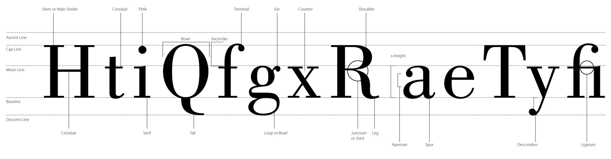

Typografi
Typografi kan beskrives som den visuelle opsætning af et skrevet ord, og det er derfor meget mere end blot en skrifttype - det er blot et af elementerne. Typografi vurderes består blandt andet også af læsbarhed, kolonner og weights. Der er altså også mange begreber indenfor typografi.
Typeface
Et typeface er selve skrifttypen, der er valgt. Det kan eksempelvis være Times New Roman eller Calibri. Et typeface kan indeholde flere weights.
Font
Fonten er den valgte skrifttype – altså selve tegnene uden styling.
Serif
Serif kaldes også for antikva, og det er skrifttyper, der har ”fødder”. Fødderne gør det til en letlæselig skrifttype, da fødderne nærmest guider øjnene i læseretningen. Dog opfattes det af mange som en forældet skrifttype, og derfor benyttes serif-typefaces mindre og mindre til brødtekst.
Sans serif
sans serif mere og mere i dag. Det giver typisk et mere blødt udtryk.
Weight
Weights er betegnelsen for bogstavernes tykkelse eller hældning. Det kan for eksempel være Arial Regular, Arial Italic eller Arial Bold.
Minuskler og majuskler
Minuskler er små bogstaver (abc), og majuskler er store bogstaver også kaldet versaler (ABC).
Fontanatomi
Leading
På dansk kaldes det linjeafstand, og det er afstanden mellem to linjer målt fra bundlinje til bundlinje.
Kerning
Afstand mellem to enkelte bogstaver.
Tracking
Tracking er afstanden mellem bogstaver i en længere markering af tekst eller bare et enkelt ord.
10 gode råd
- Kend dine fomt-familier.
- Kombiner en serif font med en sans serif.
- Kombiner en sans serif med en serif font.
- Du bør aldrig kombinere to lignende fonte.
- Kontrast er altafgørende.
- Du bør kun benytte to forskellige fonte. I nødstilfælde må du bruge tre forskellige.
- Du bør ikke kombinere fonte med forskellige stemninger.
- Du bør kun benytte fonte, der har identiske stemninger og kommer fra samme tidsære.
- Brug forskellige weights fra samme fontfamilie.
- Brug aldrig Comic Sans, Papyrus, Curlz eller lignende.

Gratis vs. premium
Det er muligt at finde en masse forskellige fonts online. Nogle er gratis, og andre koster penge, men som det gør sig gældende for så meget andet, så er der både fordele og ulemper ved begge.
Den største fordel ved gratis fonts er selvfølgelig, at de er gratis. Der findes enormt mange forskellige, men der er desværre et stykke mellem de gennemarbejdede fonts. Derfor kan der blandt mange af de gratis fonts mangle specialtegn såsom æ, ø og å.
Kvalitet følger for det meste med prisen, og det gør sig også gældende for fonts, der koster penge. Risikoen for at få en font, der mangler forskellige weights eller specialtegn, og der hersker aldrig nogen tvivl om, hvad man må bruge fonten til. Der kan dog være nogle fonts, der ikke er gennemarbejdede ordentligt, og derfor kan der være sprunget lettere over sådan noget som kerning.